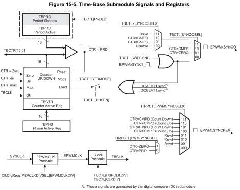

1. SE 423: Introduction to MechatronicsLecture 5: DAC & ADCMarius Juston
Wednesday, February 4th 2026
2. Reminders
Office Hours:
- Monday: 4-6 PM, Neel
- Tuesday: 11-1 PM, Lakshmi
- Tuesday: 1-3 PM, Samuel
- Tuesday: 2-5 PM, Dan & Marius
Lab: Starting Lab 2 this week. This is also a 1-week lab!
Homeworks:
- Check-offs for homework 2 Ex 1 & 2 are due February 17, 5PM (The end of office hours)
- Check-offs for homework 2 Ex 3 & 4 are due February 24, 5PM (The end of office hours)
- Answers and code submissions for homework 2 are due February 17, 9AM
LabVIEW (This week):
- All check-offs for LabVIEW 1 are due February 5, 5PM
LabVIEW will be quickly checked-off at the beginning / end of your lab session.
3. Questions?
Homework, Lab, LabVIEW, quiz questions?
4. Introduction
In the real world we have continuous signals:
- Temperature
- Sound
- Velocity
- Pressure
- Luminosity
Again, we have the CPU only able to process discrete binary values (0 or 1).
ADC (Analog-to-Digital Converter):
- "The Eyes/Ears." Converts physical signals into numbers the CPU can process.
DAC (Digital-to-Analog Converter):
- "The Hands/Voice." Converts processed numbers back into voltages to drive motors, speakers, etc.
5. DAC(Digital-to-Analog Converter)
6. DAC
A device that convert binary input number into a proportional analog voltage symbol.
Where represents the resolution, the larger , the more possible subdivision values you can have (the more you have the more expensive it is!)
Where is the reference value you input to be converted.
Specifically for our microcontroller we have,
How many bits of resolution do we have? 12
7. DAC – R-2R resistor ladder
A voltage mode resistor R-2R resistor ladder network.
If the image is still here, I did not have time to make an animation

It produces an analog output voltage from the digital integer composed of bits: (most significant bit, MSB) through bit (least significant bit, LSB).
8. DAC – Buffered

Pull-down resistor
9. DAC
Each buffered DAC has the following features:
- 12-bit programmable internal DAC
- Selectable reference voltage source
-
- Internal
- External
- Pull-down resistor on output
- Ability to synchronize with EPWMSYNCPER
MCU DACs include an operational amplifier (Op-Amp) buffer at the output to drive loads (speakers, motor drivers) without dropping voltage due to impedance loading.
EPWMSYNCPER comes from the Time-Base submodule of the EPWM. (For a detailed description of how this signal is generated, refer to the Time-Base submodule chapter of the EPWM).
There are 3 DAC, DACA, DACB, DACC
10. DAC – For later reference

11. DAC
Setup
EALLOW;
DacaRegs.DACCTL.bit.DACREFSEL = 0; // 0 from internal reference, 1 for external
DacaRegs.DACOUTEN.bit.DACOUTEN = 1; // DAC output enabled? (DAC-OUT-EN)
DacaRegs.DACVALS.all = 0; // Clears current output value
DELAY_US(10); // Delay for buffered DAC to power up
EDIS;
Setting
DacaRegs.DACVALS.all = val; // Sets DAC output (only keeps to first 12 bits)
12. ADC(Analog-to-Digital Converter)
13. ADC
Converts continuous voltage into discrete digital numbers.
3 step process:
- Sample: A switch closes, charging a tiny internal capacitor to match the input voltage
- Holding: The switch open, trapping the charge on the capacitor so it does not change during measurement
- Quantizing: The ADC circuitry measures the stored charge against a reference

14. ADC
Each ADC has the following features:
- Selectable resolution of 12 bits or 16 bits ( for the precision you want)
- Ratiometric external reference set by VREFHI and VREFLO pins
- Differential signal conversions (16-bit mode only)
- Single-ended signal conversions (12-bit mode only)
- Input multiplexer with up to 16 channels (single-ended) or 8 channels (differential)
- 16 configurable SOCs ( we will go through what this is a bit later)
- 16 individually addressable result registers
15. ADC
Each ADC has the following features:
- Multiple trigger sources
-
- S/W - software immediate start
- All ePWMs - ADCSOC A or B
- GPIO XINT2
- CPU Timers 0/1/2 (from each C28x core present)
- ADCINT1/2
- Four flexible PIE interrupts
- Burst mode
- Four post-processing blocks, each with:
-
- Saturating offset calibration
- Error from setpoint calculation
- High, low, and zero-crossing compare, with interrupt and ePWM trip capability
- Trigger-to-sample delay capture
16. ADC
Not every channel may be pinned out from all ADCs. Check the datasheet for your device to
determine which channels are available!

17. ADC - Differential
The ADC supports two signal modes: single-ended and differential.
- In single-ended mode, the input voltage to the converter is sampled through a single pin (ADCINx), referenced to VREFLO.
- In differential signaling mode, the input voltage to the converter is sampled through a pair of input pins, one of which is the positive input (ADCINxP) and the other is the negative input (ADCINxN). The actual input voltage is the difference between the two (ADCINxP – ADCINxN).
- Differential signaling mode is advantageous because noise encountered on both inputs will be largely cancelled. Allowing for higher 16-bit precision.

18. ADC - Calculate

19. ADC – SAR (Successive Approximation Register)
F28379D uses SAR. It works like a "binary search”. Convert continuous to digital.
For iteration (where goes from down to ):
- Trial Step: The SAR logic sets the current bit to 1 (tentatively) and all lower bits to 0.
- DAC Output: The internal DAC generates a trial voltage: (Note: This simplifies to testing the half-way point of the remaining search interval).
- Comparison: The analog comparator checks the condition:
- Decision:
- If True: The comparator outputs '1'. The bit remains 1. The trial voltage is kept as part of
- If False: The comparator outputs '0'. The bit is cleared to 0. The trial voltage is discarded.
This process converges logarithmically (because it is binary search). The error at step is strictly bounded by
20. ADC – SAR (Successive Approximation Register)

21. SOC(Start-of-Conversion)
22. SOC - Intro
In simple microcontrollers (like Arduino), you usually just say “Read analog value from pin A0 now!”. In more advanced controllers we use SOCs
SOCs is a configuration set that defines what happens, not just when:
You do not configure the ADC directly, you configure “SOC0” “SOC1”, etc…
Each SOC defines:
- Trigger Source: What causes the same? (Timer, Software, ePWM, GPIO).
- Channel: Which pin to sample? (e.g. ADCINA4).
- Acquisition Window (ACQPS): How long to hold the “sample” switch open?
23. SOC – Trigger Sources
The ADC is an event-based machine.
For example, you can set SOC1 to trigger on ePWM1 (for motor currents) and SOC1 to trigger on CPU Timer 2 ( for temperature monitoring)
What to do if multiple triggers arrive at once? We use a Round Robin, to decide which SOC converts first.
You can assign SOCs to have strict priority over others (critical safety loops)
24. SOC – Trigger Sources

25. SOC – Acquisition Window
The internal capacitor needs time to charge. If the source impedance is high (weak signal), it takes longer
AdcxRegs.ADCSOCxCTL.bit.ACQPS
ACQPS is a 9-bit register that can be set to a value between 0 and 511, resulting in an acquisition window duration of:
Acquisition Window = .
The acquisition window duration is based on the System Clock (SYSCLK), not the ADC clock (ADCCLK)!
Why it matters: If you make this too short, the capacitor won't fully charge, and you will read the previous channel's "ghost" voltage (cross-talk).
26. SOC – Interrupts
You don’t need an interrupt for every sample ( bit ).
You can set an interrupt to fire only after a sequence (e.g. After SOC3 completes)
Early vs Late Interrupts:
- Early: First the interrupt at the end of acquisition
- Late: At the end of conversion
27. ADC – Single Conversion from ePWM
AdcaRegs.ADCSOC5CTL.bit.CHSEL = 1; //SOC5 will convert ADCINA1
AdcaRegs.ADCSOC5CTL.bit.ACQPS = 19; //SOC5 will use sample duration of 20 SYSCLK cycles
AdcaRegs.ADCSOC5CTL.bit.TRIGSEL = 10; //SOC5 will begin conversion on ePWM3 SOCB
28. ADC – FFT Code (much more complicated example)
EALLOW; //write configurations for all ADCs ADCB
AdcbRegs.ADCCTL2.bit.PRESCALE = 6; //set ADCCLK divider to /4
AdcSetMode(ADC_ADCB, ADC_RESOLUTION_12BIT, ADC_SIGNALMODE_SINGLE); //read calibration settings
//Set pulse positions to late
AdcbRegs.ADCCTL1.bit.INTPULSEPOS = 1; //power up the ADCs
AdcbRegs.ADCCTL1.bit.ADCPWDNZ = 1;
DELAY_US(1000); //delay for 1ms to allow ADC time to power up
AdcbRegs.ADCSOC0CTL.bit.CHSEL = 4; //SOC0 will convert Channel you choose Does not have to be B0
AdcbRegs.ADCSOC0CTL.bit.ACQPS = 99; //sample window is acqps + 1 SYSCLK cycles = 500ns
AdcbRegs.ADCSOC0CTL.bit.TRIGSEL = 0x11; // EPWM7 ADCSOCA or another trigger you choose will trigger SOC0
AdcbRegs.ADCINTSEL1N2.bit.INT1SEL = 0; //set to last SOC that is converted and it will set INT1 flag ADCB1
AdcbRegs.ADCINTSEL1N2.bit.INT1E = 1; //enable INT1 flag, originally = 1 (need to set to 1 for non-DMA)
AdcbRegs.ADCINTFLGCLR.bit.ADCINT1 = 1; //make sure INT1 flag is cleared
AdcbRegs.ADCINTSEL1N2.bit.INT1CONT = 1; // Interrupt pulses regardless of flag state
EDIS;